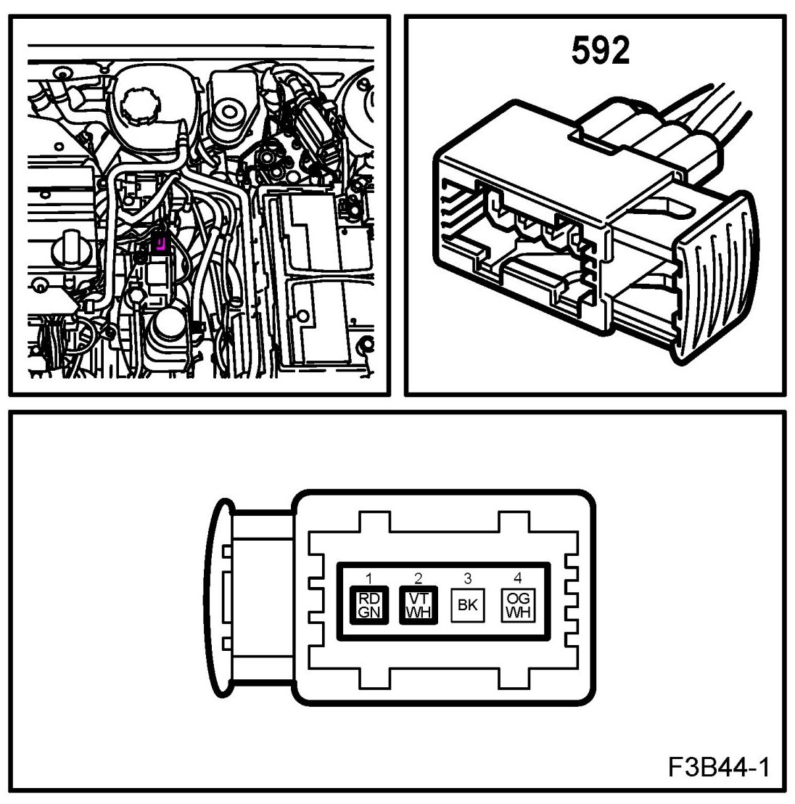
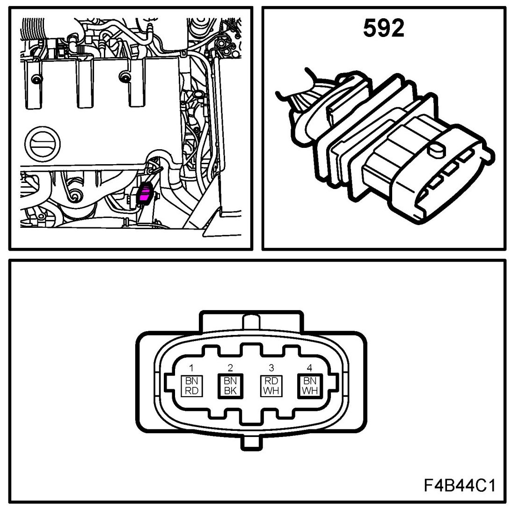
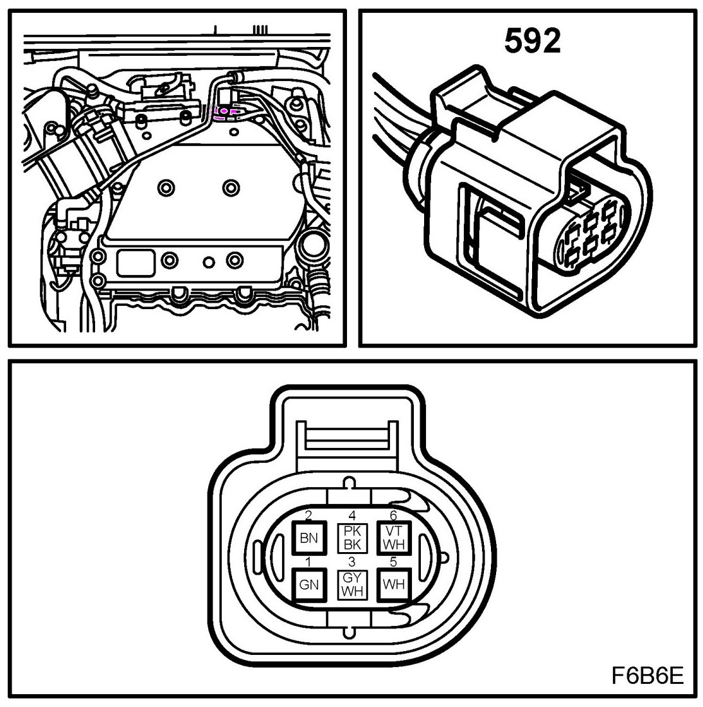

Front Heated Oxygen Sensor (592)
Front Heated Oxygen Sensor (592)
Location:
B207
component: before the catalytic converter
connector: blue connector on the console between the power steering pump and the vacuum pump

Z18XE
component: before/on the catalytic converter
connector: on a bracket at the oil filter

B284
component: before/on the catalytic converter
connector: at rear corner of upper intake manifold on gearbox side below connector H7-1
